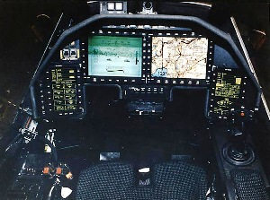
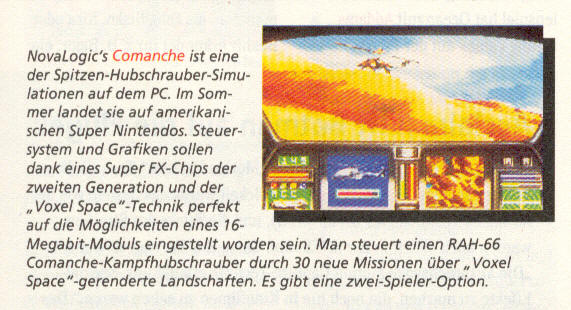
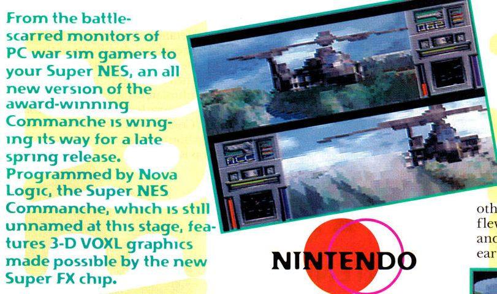
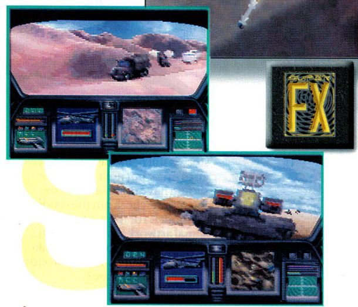

SNES - Comanche
 :::. Por Gigacom
:::. Por Gigacom
:::. fonte: unseen64
Comanche é o apelido do helicoptero RAH-66 do exército americano. Construído com tecnologia stealth e eletrônica de ponta, o RAH-66 é a aeronave de asas rotatorias mais letal que existe, sem que haja qualquer outro helicoptero que possa lhe desafiar abertamente.

Olha o Comanche aé por fora, e o cockpit dele.
A Novalogic fez um jogo/simulador desse helicoptero para PC bem no inicio da década de 90. Veio a idéia de lançar esse jogo para video games caseiros, e o mais cotado depois de várias análises para receber o game foi o SNES. A conversão para o 16 bits da Nintendo iria utilizar o chip FX, o mesmo responsável pela geração dos gráficos 3D de Star Fox.
A noticia rodou o mundo, e claro foi o maior alarde, pois a Novalogic era respeitada por fazer os mais fiéis simuladores de aviões, tanques e helicopteros de guerra, e ter um joguinho desses da Novalogic para o SNES seria a realização dos sonhos de muito moleque catarrento, afinal, a versão pra PC era muito boa com uma ótima simulação do terreno, táticas de guerra, combate, sistema de armas e etc.
Porém, as imagens que apareceram nas revistas que noticiaram o game, parecem ser apenas da versão PC, e não um beta ou test-play de uma versão do SNES. Até onde eu pude descobrir, o jogo não foi lançado por vários motivos, entre eles:
1 - Capacidade do chip FX: tá certo que o FX era bacaninha e bem capaz, mas não tanto ao ponto de suportar um ambiente 3D como o de Comanche.
2 - Memória:
apesar do SNES ter uma quantidade de memória RAM
considerável, suficiente para suportar os gráficos
texturizados do Comanche, seria complicado colocar todo o código
do jogo, assim como as texturas e efeitos sonoros em um cartuchinho de
16 Mega bits... ou seja, apenas 2 Mega Bytes. Se um chip de 16Mb
(ou 2MB, tanto faz) já era caro pra cacete, some isso ao custo
do chip FX + mão de obra para a conversão do jogo pro
SNES + algumas outras coisitas e você terá um jogo caro
que apesar de ser bom, significará um grande risco de obter um
beeeeeelo prejuízo no balancete de fim de ano da empresa...
3 - Não é assim tãããão Super quanto imaginavamos: o
SNES é sofisticado e tem ótimas qualidades, mas ele nunca
foi tão assim fodastíco como todo mundo pensa... o
processador dele é lerdo como um Fusca 63, e essa lezeira toda
é percepitível em muitos jogos, inclusive no Star Fox (o
frame rate de Star Fox raramente passa dos 15), daí pegar um
game que exigia no minimo um PC 386 DX pra rodar e forçar o SNES
a fazer o mesmo não daria muito certo....
Por fim, a coisa não foi pra frente, depois de um tempo ninguem mais lembrava desse projeto da Novalogic, e tudo caiu no esquecimento como sempre. Abaixo, algumas imagens de uma revista francesa dando a noticia;


Acesse o Trombone e comente sobre essa matéria!